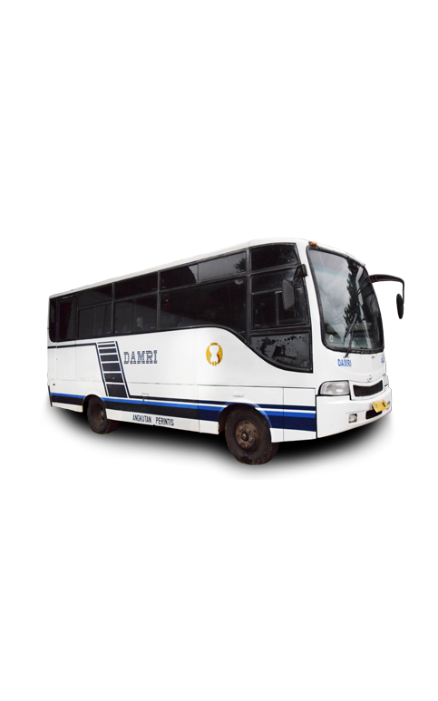
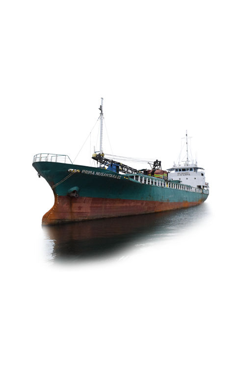
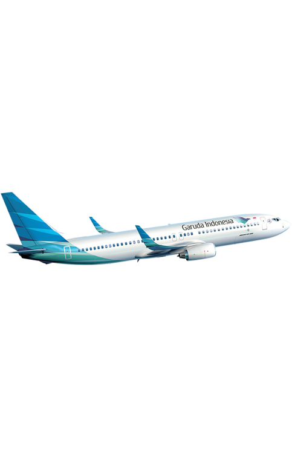

-
SIMTRANS DARAT
Temukan perjalanan anda dengan berbagai jenis angkutan darat di Provinsi Bengkulu
dan jangan lupa selalu patuhi peraturan agar tercipta suasana tertib berlalu lintas
Silahkan pilih menu dibawah ini untuk mendapatkan berbagai informasi transportasi darat
Semoga selamat sampai tujuan. -
SIMTRANS LAUT
Angkutan laut merupakan transportasi yang memiliki jadwal dinamis
Kegiatan masyarakat di Provinsi Bengkulu sebagian besar menggunakan transportasi laut
Sistem informasi ini dibuat untuk mengintegerasikan antara kegiatan masyarakat tersebut
Silahkan pilih menu dibawah ini untuk melihat informasi transportasi di bidang laut
Selamat berlayar. -
SIMTRANS UDARA
Transportasi udara merupakan alat angkutan mutakhir dan tercepat.
Provinsi Bengkulu memiliki dua Bandara yang beroperasi yaitu Fatmawati Soekarno Bengkulu
dan Bandara Muko-muko. Infromasi merupakan hal yang paling penting sebelum masyarakat
menggunakan transportasi ini. Silahkan pilih menu dibawah ini untuk mengakses
jadwal penerbangan dan informasi lainnya. Safe Flight !